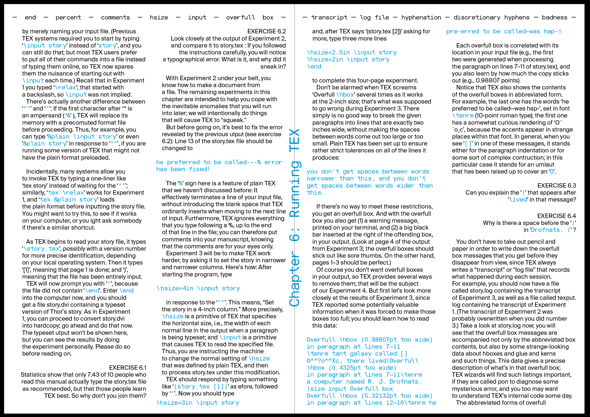

TeX publication

I worked with Martin Lezhenin’s font in this project. It felt new and fresh working with a sans serif typeface especially after three weeks working with Garamond. This is a redesign of a the chapter from the TeX manual. It has general text on how to run the program, some tricks, exercises, example formulas and key words. For the main differentiators between information in the text I used indents, spaces before and after, color, change between monospaced and regular fonts, two or one column grid and right or left justification. The chapter title is depicted on every spread, intentionally to be hardly seen because of the spine, if printed and bounded. Every page starts from the list of key words the bit would be about. The chapter ends with three quotes placed a bit lower than the centre of the page.